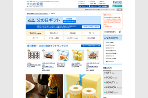
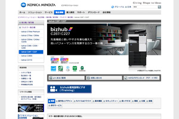
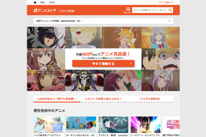
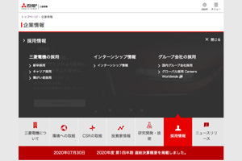
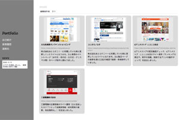

<!DOCTYPE html>
<html lang="en" dir="ltr">
  <head>
    <meta charset="utf-8">
    <meta name="viewport" content="width=device-width,intial-scale=1.0">
    <title>Port Folio_TOP</title>
    <link rel="stylesheet" href="css/ress.css">
    <link rel="stylesheet" href="css/style.css">
    <link rel="stylesheet" href="css/tab.css">
    <link rel="stylesheet" href="css/news.css">
    <link href="https://fonts.googleapis.com/css2?family=Lora:ital,wght@1,500&display=swap" rel="stylesheet">
    <script src="https://ajax.googleapis.com/ajax/libs/jquery/3.4.1/jquery.min.js"></script>
  </head>
  <body>
    <div id="top" class="allWraper clearfix">
      <header class="equal-height">
        <div class="headerContents">
          <h1>PortFolio</h1>
          <nav>
            <ul>
              <li><a href ="profile.html">自己紹介</a></li>
              <li><a href ="index.html">業務履歴</a></li>
              <li><a href ="address.html">連絡先</a></li>
            </ul>
          </nav>

          <div class="newsBox">
            <p class="title">NEWS</p>
            <dl class="inner">
              <dt>2020.10.10</dt>
              <dd>カテゴリを増設しました。（業務制作物と習作に分離）</dd>
            </dl>
          </div>
        </div>
      </header>
      <div class="sectionContainer equal-height">
        <ul class="pankuzuList">
          <li>業務履歴</li>
          <li class="current"></li>
        </ul>
        <ul class="tablist">
          <li><a class="tab_btn is-active-btn"  href="#tab01">業務制作物</a></li>
          <li><a class="tab_btn" href="#tab02">習作</a></li>
        </ul>
        <div id="tab01" class="tab_item is-active-item">
          <section>
          <article id="contents1" onclick="func1()">
            <div class="contents">
              <figure>
                <a href="work/work01.html"></a>
              </figure>
              <figcaption>
                <h2 class="subTitle"><b>大丸松坂屋オンラインショッピング</b></h2>
                <p class="urlAddress"><a href="https://www.daimaru-matsuzakaya.jp/" target="_blank">https://www.daimaru-matsuzakaya.jp/</a></p>
                <p>株式会社あとらす二十一に所属していた時に更新していたサイトになります。主に季節のイベントページ（お中元・母の日・父の日・クリスマス等）のページ制作に携わりました。</p>
              </figcaption>
            </div>
          </article>
          <article>
            <div class="contents">
              <figure>
                <a href="work/work02.html"></a>
              </figure>
              <figcaption>
                <h2 class="subTitle"><b>コニカミノルタ</b></h2>
                <p class="urlAddress"><a href="https://www.konicaminolta.jp/business/products/index.html" target="_blank">https://www.konicaminolta.jp/business/products/index.html</a></p>
                <p>株式会社あとらす二十一に所属していた時に更新していたサイトになります。主に製品ページの更新を週に2,3回の頻度で更新・新規制作していました。</p>
              </figcaption>
            </div>
          </article>
          <article>
            <div class="contents">
              <figure>
                <a href="work/work03.html" target="_blank"></a>
              </figure>
              <figcaption>
                <h2 class="subTitle"><b>dアニメストア ニコニコ支店</b></h2>
                <p class="urlAddress"><a href="https://site.nicovideo.jp/danime/?ref=nicotop_danime" target="_blank">https://site.nicovideo.jp/danime/?ref=nicotop_danime</a></p>
                <p>dアニメストアの配信動画チェック、dアニメストア ニコニコ支店のサイト運用（ランキングの修正や、新作の掲載、放映するアニメの動作チェック）を担当しました。</p>
              </figcaption>
            </div>
          </article>
          <article>
            <div class="contents">
              <figure>
                <a href="work/work04.html"></a>
              </figure>
              <figcaption>
                <h2 class="subTitle"><b>三菱電機株式会社</b></h2>
                <p class="urlAddress"><a href="https://www.mitsubishielectric.co.jp/corporate/" target="_blank">https://www.mitsubishielectric.co.jp/corporate/</a></p>
                <p>三菱電機の企業情報のサイト運用（主に担当したカテゴリとして投資家情報・研究開発の更新、他全般的に）を担当しました。</p>
              </figcaption>
            </div>
          </article>
        </section>
            <!--tab01End-->
            </div>
        <div id="tab02" class="tab_item">
          <section>
          <article>
            <div class="contents">
              <figure>
                <a href="work/work05.html"></a>
              </figure>
              <figcaption>
                <h2 class="subTitle"><b>第1回改修</b></h2>
                <p class="urlAddress">2020.10.12</p>
                <p>作品や実績をさらに掲載するために掲載場所を拡張。さらに修正を示すためのNEWS欄も増設。サイトの雰囲気を損なわないよう、シンプルな設置と動作に留めました。</p>
              </figcaption>
            </div>
          </article>
        </section>
        <!--tab02End-->
      </div>
      <!--sectionContainerEnd-->
      </div>
      <div class="pagetop">
        <p><a href="#pagetop">ページトップへ戻る</a></p>
      </div>
      <footer>
        <p>&copy;PortFolio</p>
      </footer>
      <!-- allWraperEnd-->
    </div>
  </body>
  <script type="text/javascript">
  //高さを揃える
  function equalHeight(elements) {
    const target = Array.from(document.querySelectorAll(elements));
    const heightList = [];
      target.forEach(element => {
        const height = element.clientHeight;
        heightList.push(height);
      });
    const maxHeight = Math.max.apply(null,heightList);
      target.forEach(element => {
        element.style.height = maxHeight + 'px';
      });
    };
    equalHeight('.equal-height');

    //画面幅に応じてクラスをとる。
    $(window).on('load resize', function(){
        var w = $(window).width();
        var x = 1065;
        if (w < x) {
          //画面サイズが1065px未満のときの処理
          $("div.sectionContainer").removeClass("equal-height");
          $("div.sectionContainer").css('height','100%');
          $("header").removeClass("equal-height");
          $("header").css('height','200px');
        }else{
          $("div.sectionContainer").addClass("equal-height");
          $("div.sectionContainer").css('height','0');
          $("header").addClass("equal-height");
          $("header").css('height','100%');
        }
      });

    //ページトップに戻る。
    $(function(){
      $('a[href="#pagetop"]').click(function(){
        var speed = 500;
        var href= $(this).attr("href");
        var target = $(href == "#pagetop" || href == "" ? 'html' : href);
        var position = target.offset().top;
          $("html, body").animate({scrollTop:position}, speed, "swing");
          return false;
      });
    });

    //タブ切り替え
    $(function() {
      $('.tab_btn').on('click', function() {
        $('.tab_item').removeClass("is-active-item");
        $($(this).attr("href")).addClass("is-active-item");
        $('.tab_btn').removeClass('is-active-btn');
        $(this).addClass('is-active-btn');
      });
    });
  </script>
</html>
